Stucadoor in Breda
Oud stucwerk terug in zijn oude glorie.
Zwegers herstelt en kopieert stucplafonds, gevels, lijstwerk en ornamenten in monumentale en historische panden, binnen en buiten. Ook voor glad pleisterwerk en moderner stucwerk kunt u bij ons terecht.
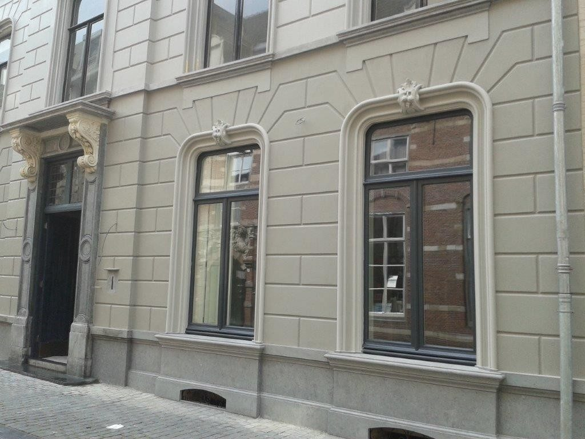
Gemaakt in Breda, voor Breda en omgeving
Een greep uit het werk: plafondrozetten, consoles, sluitstenen, gevelornamenten en de gevels waar ze op horen.
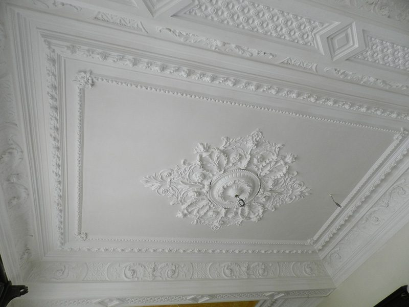
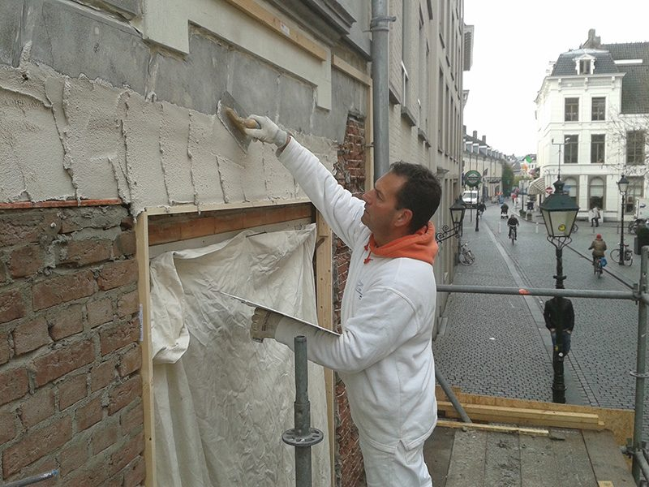
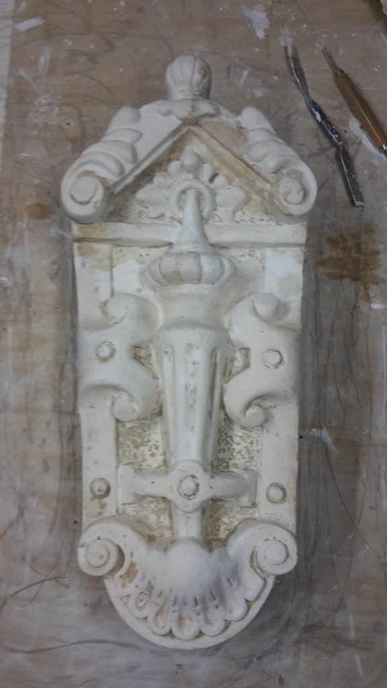
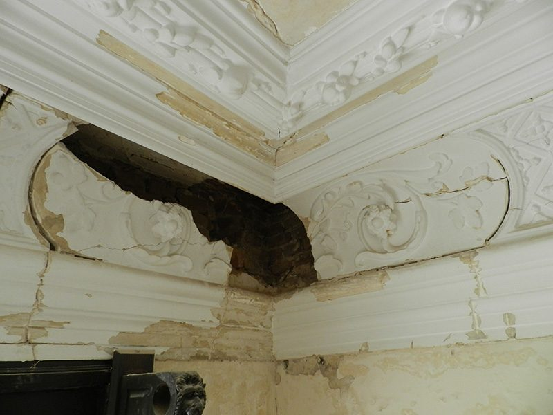
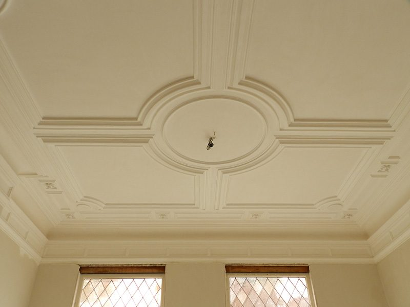
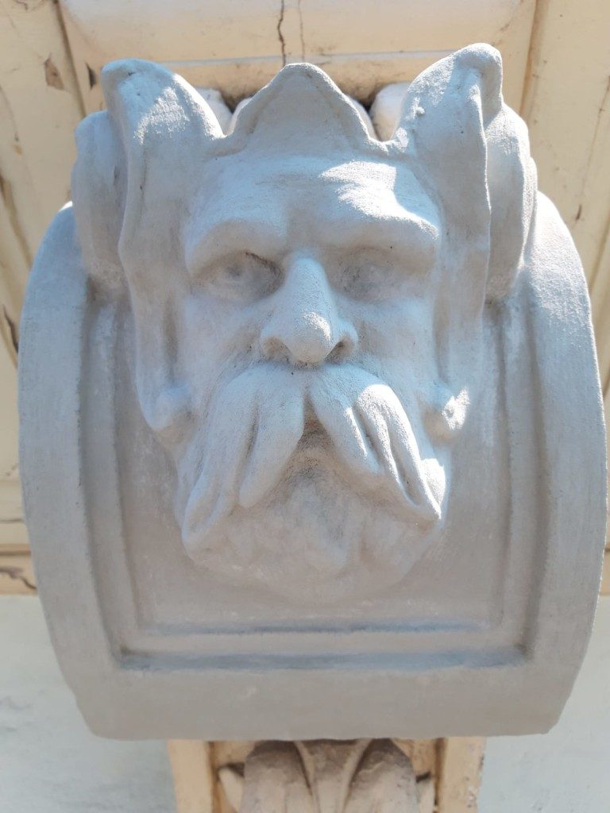
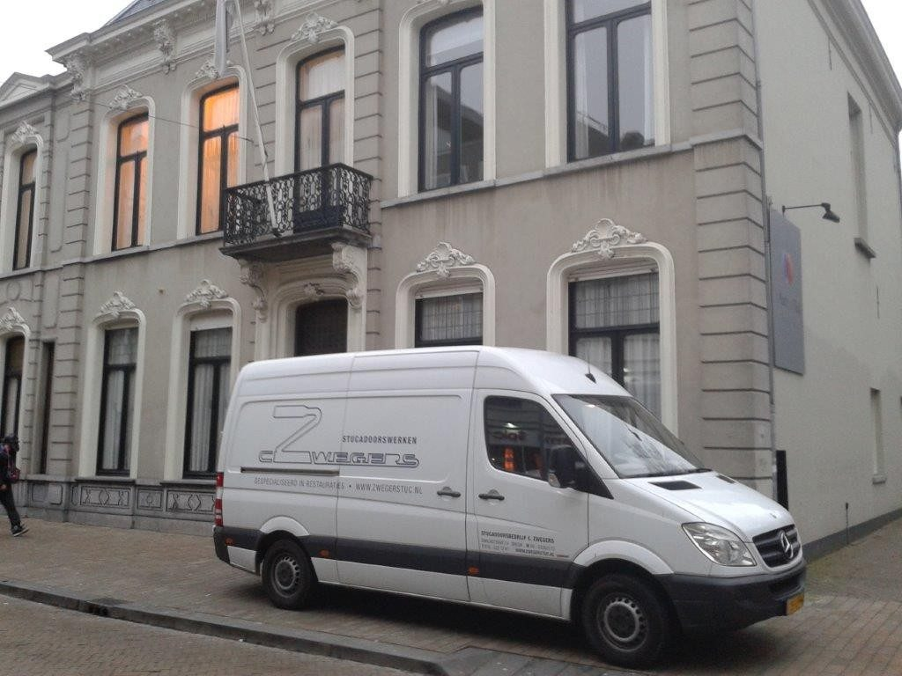
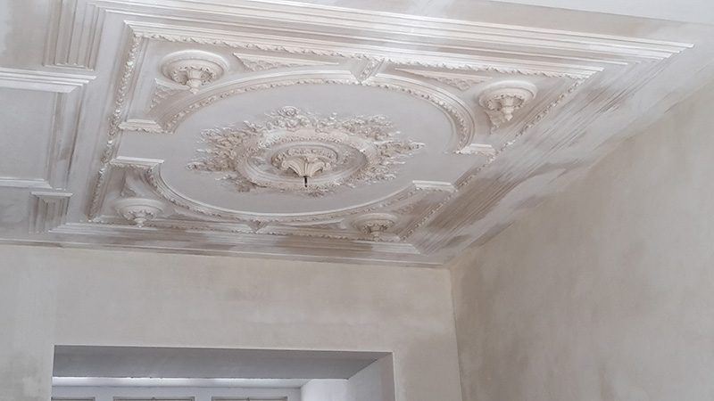
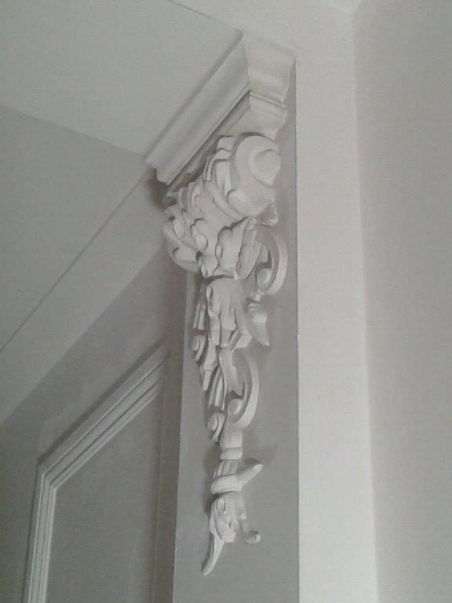
Het ambacht
Van mal tot gevel
Ontbreekt een ornament, dan wordt het gekopieerd. Er wordt een mal gemaakt van wat er nog is, het stuk wordt gegoten en op zijn plek gezet.
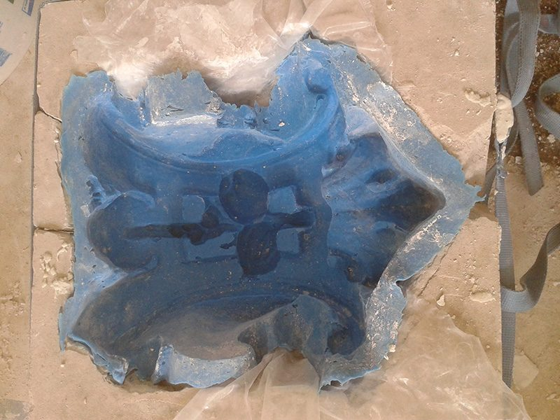
De mal
Een afdruk van een ornament.
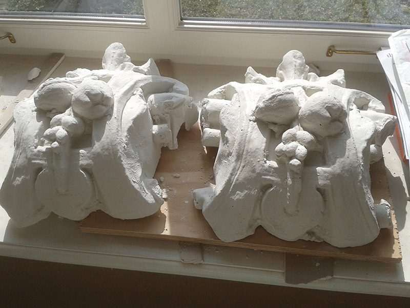
Het gietstuk
Het gegoten ornament.
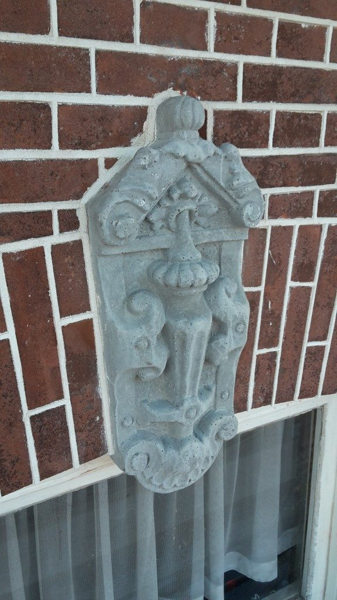
Op de gevel
Een ornament op een bakstenen gevel.
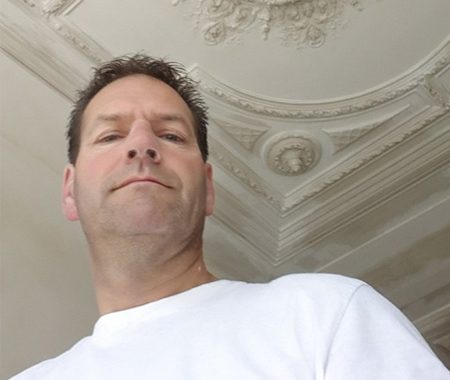
Bedrijf met historie
Het vak van vader op zoon
Zijn vader en grootvader gingen Corné voor als ambachtelijk stucadoor. Zwegers houdt zich bezig met klassiek en modern stucwerk. Door de jarenlange ervaring kan het bedrijf in de 21e eeuw het originele stucwerk in monumentale en historische panden herstellen of kopiëren, zowel binnen als buiten.
De enige manier om het echt goed te leren is het te maken.Uit het boek In dienst van de Nassaus, over Meester Stukadoor Corné Zwegers
In dat boek staat ook dat Corné in 1964 in Breda werd geboren, de vakopleiding volgde in Vught en als vijftienjarige bij zijn vader in het bedrijf ging werken. De fraaie 19e-eeuwse plafonds in het historische pand aan de Catharinastraat had hij al in 1995 hersteld.
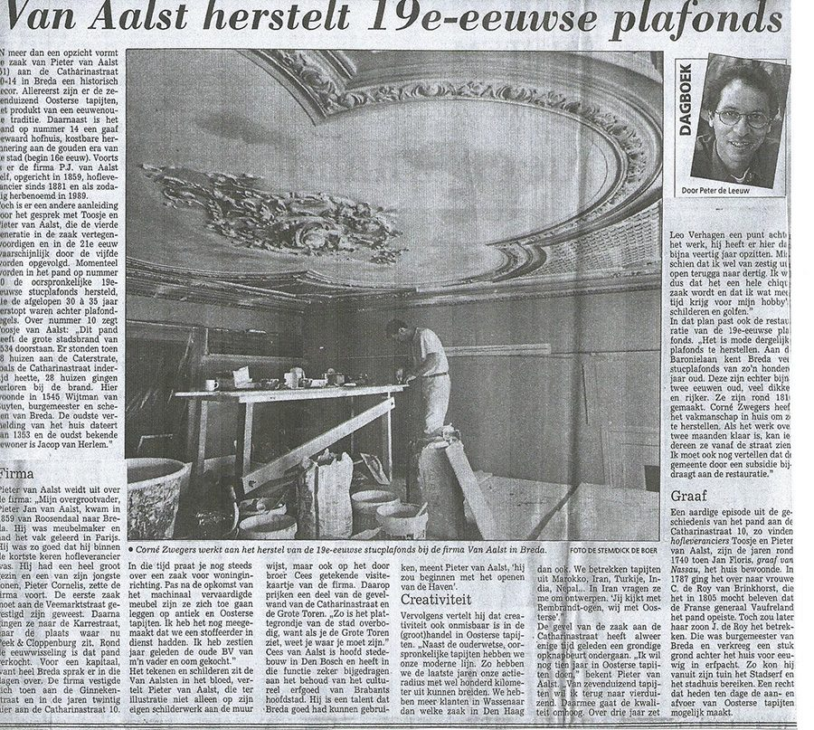
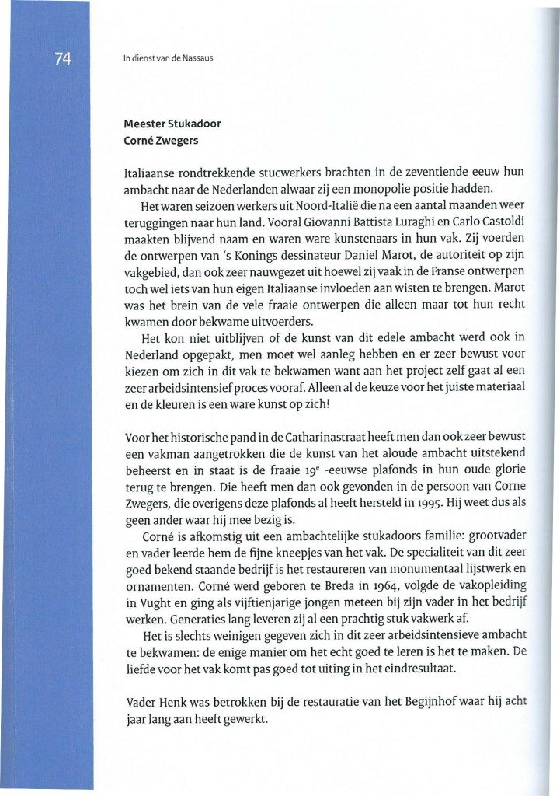
Alle soorten stucwerk
Wij komen graag bij u langs voor een vrijblijvende offerte of een advies op maat.
Daarnaast: afdekwerkzaamheden, het afvoeren van ons afval en latex werkzaamheden.
- Glad pleisterwerk
- Schuurwerk
- Uitvlakken voor tegelwerk
- Sierpleisters
- Buitengevels, traditioneel
- Buitengevelisolatie
- Leem- en kalkpleisters
- Betonlook
- Lijstwerk en ornamenten, prefab en traditioneel
Waar we werkten
Een deel van de adressen waar Zwegers aan gevels en plafonds heeft gewerkt.
- Nieuwe Ginnekenstraat, Breda
- Molenstraat, Zundert
- Hoge Zwaluwe
- Mauritsstraat, Breda
- Sophiastraat, Breda
- Baronielaan, Breda
- Koestraat, Geertruidenberg
- Catharinastraat, Breda
- Ginnekenweg, Breda
- Liesboslaan, Breda
- Nieuwe Boschstraat, Breda
- Willemstraat, Breda